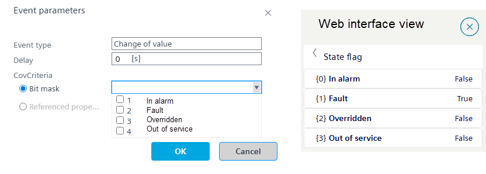
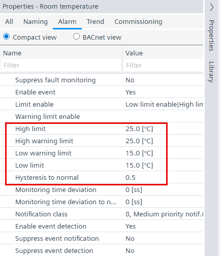
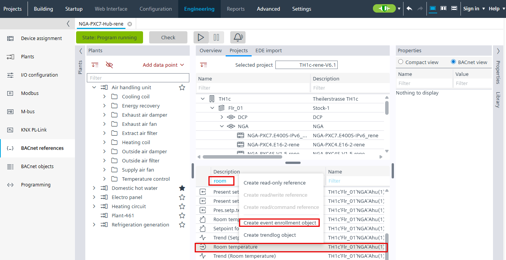
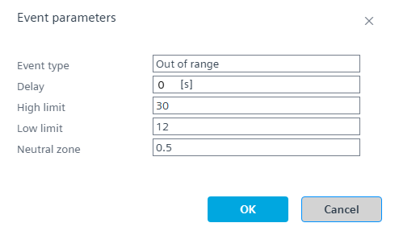
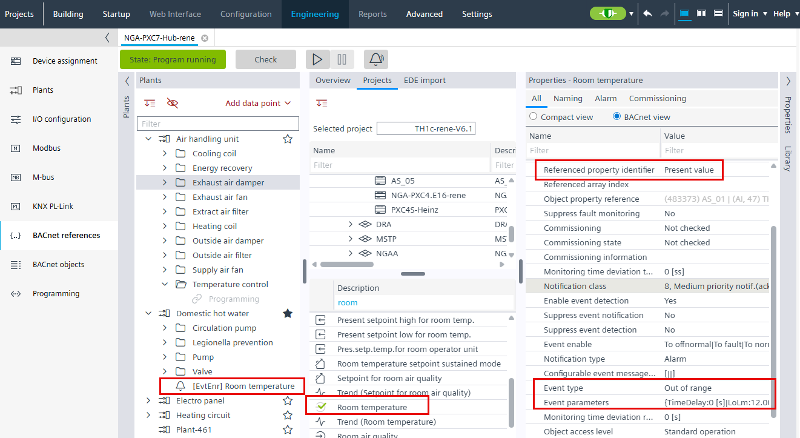

Examples: Event enrollment
Monitoring of In alarm, Fault, Overridden and Out of service
If changes to a data point status need to be reported or logged, monitoring can be carried out using the state flag property. This can be done with a multiple selection with an event enrollment, or specifically with several event enrollment objects.
- In the Plants navigation view, select the event enrollment object.
- Select the Properties tab on the right.
- Select the BACnet view option.
- From the Referenced property identifier drop-down list, select the value State flag to be monitored.
- From the Event type drop-down list, select Change of value.
- Select Event parameters.
- The Event parameters dialog box opens.
- Select the Bit mask option:
- In the Bit mask drop-down list, check the desired check boxes for In alarm, Fault, Overridden or Out of service.

- Select OK.
- The Change of value event type for In alarm, Fault, Overridden or Out of service is configured.
- (Optional) Configure the event message text.
Customizing event message texts for an event enrollment object - (Optional) Change the notification class value.
Note: The event enrollment object is always created with notification class 8 = Medium priority notification (Acknowledge).
Alarm management by notification class
Configuring additional alarms
- Define the high and low limit alarms for the data point.
- Go to Building > Building structure.
- Right-click a device and select Go to engineering.
- Open the I/O configuration task.
- In the Plants navigation view, select a datapoint, for example, room temperature.
- Select the Properties tab on the right.
- Select the Alarm tab.
- Define the properties according to the picture.

- Create an additional alarm with an event enrollment.
- Open the BACnet references task.
- Select the Projects tab.
- In the Description column, enter, for example, room temperature.
- Select the room temperature.
- Right-click and select Create event enrollment object.

- Configure the event enrollment object.
- Select the created event enrollment object.
- Select the Properties tab on the right.
- Select the All tab.
- In the Referenced property identifier drop-down list, select Present value.
- From the Event type drop-down list, select Out of range.
- Select Event parameters.
- The Event parameters dialog box opens.
- Define the properties according to the picture. In this example, the high limit value must be greater than 25 and the low limit value must be less than 15.

- Select OK.
- Additional high and low limit alarms are defined.
